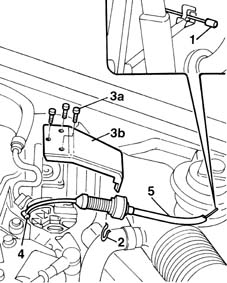

1068A30 accelerator control cable - r + r
- Path
- Procedures > 10 ENGINE UNIT > 1068 ACCELERATOR CONTROLS > 1068A accelerator pedal control > 1068A30 accelerator control cable - r + r
- Kind
- repair procedure (removal / refitting; the operation number is the code)
- Applies to
- engines: 1.6 16v; all production periods
- Interactive page
- https://sloeber94.github.io/elrnDB-fMltpl/en/#/2891276
Applies to: engines: 1.6 16v; all production periods
 Removing
Removing
 Refitting
RefittingOpen the driver's door.
1. Disconnect the throttle cable from its seat on the pedal.
2. Disconnect the clip from the cable sheath.
Open the bonnet lid.
3. Undo bolts (3a) securing bracket (3b).
4. Disconnect the accelerator cable from the throttle body.
5. Remove the accelerator cable from the engine bay by passing the cable retainer on the accelerator pedal through the hole in the bulkhead.

Applies to: engines: 1.6 16v; all production periods
Refitting
RemovingInsert the accelerator cable through the hole in the bulkhead until it is close to the pedal.
Secure the cable to the accelerator pedal.
Secure the cable to its seat in the throttle body.
Fit the bracket on the throttle body and secure using the retaining bolts.
Secure the accelerator cable to the anchorage bracket using the clip.
1068A10 accelerator pedal control - check, adjust if necessary and lubricate
Close the bonnet lid.
Close the front side door.